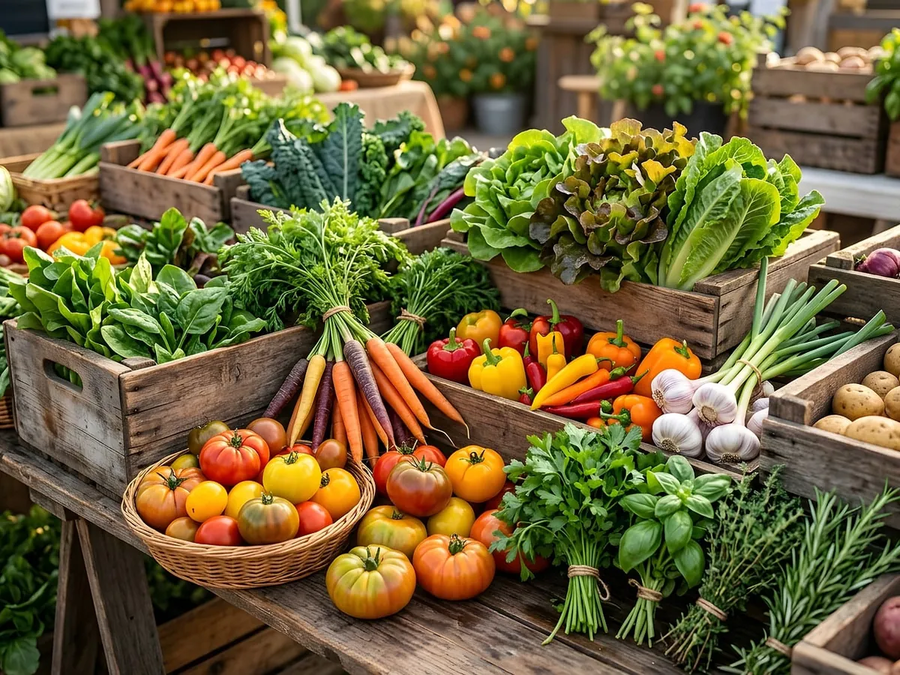
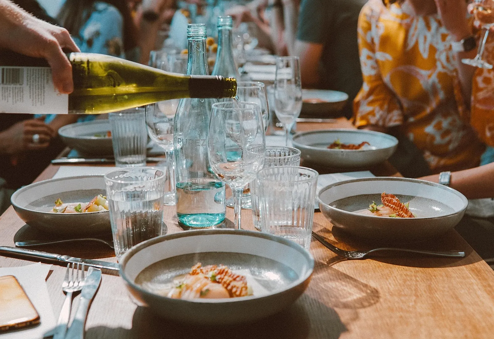
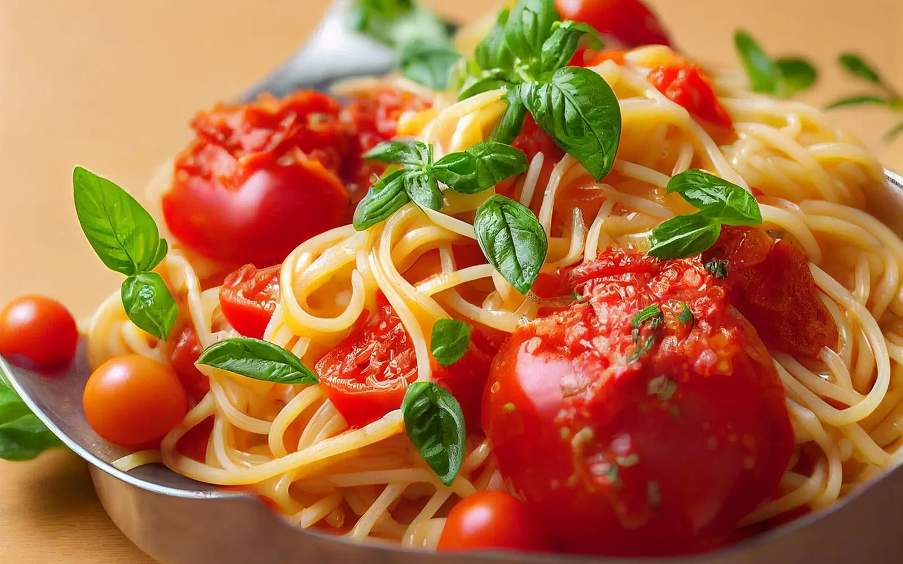
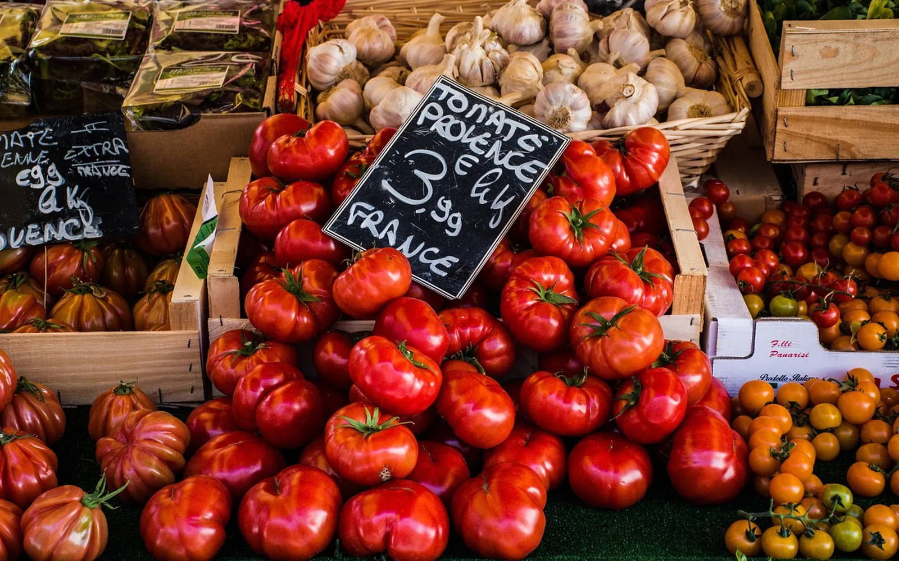
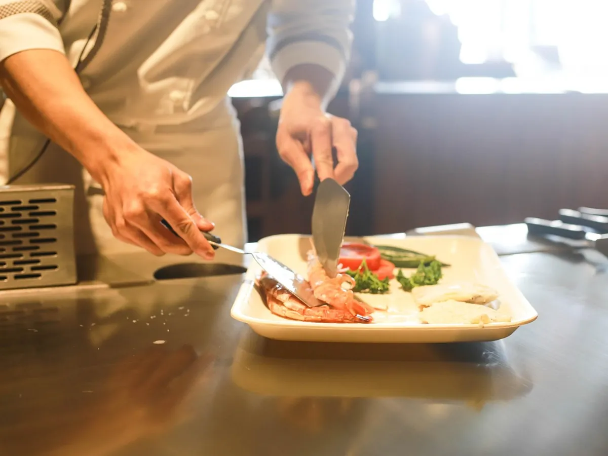
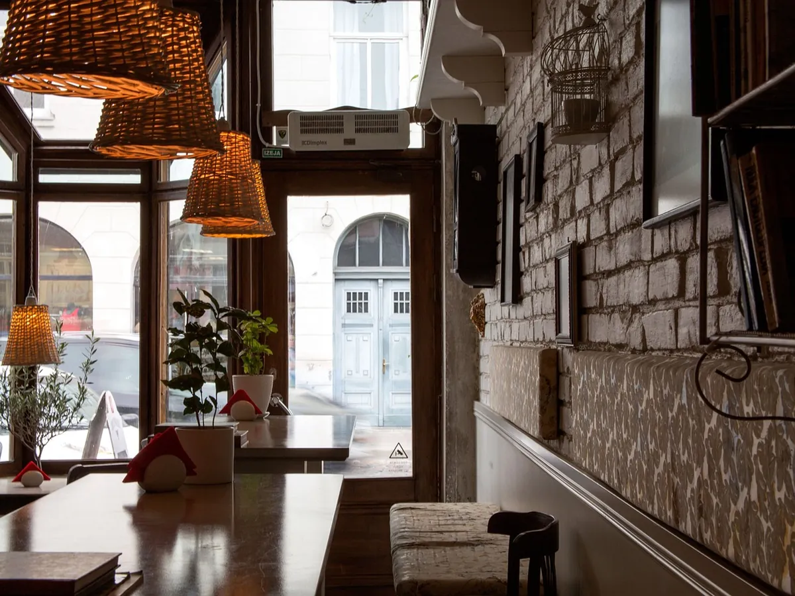

Le marché
Ce que le marché donne, ce matin-là.
Pas de carte écrite d’avance : les maraîchers et les pêcheurs décident un peu pour nous. Trois entrées, trois plats, deux desserts, et c’est tout.
8plats à la carte, chaque jour
Une petite salle de vingt-quatre couverts dans la vieille ville d’Ajaccio. La carte s’écrit chaque matin au marché, et change quand les étals changent.
Prochain service dans
Notre façon de faire
À sept heures, on choisit au marché ce qui nous fait envie. À vingt heures, c’est dans votre assiette. Faites glisser pour voir le chemin.


7 h, au marché20 h, à tableGlissez le curseur, ou utilisez les flèches du clavier.

Le marché
Pas de carte écrite d’avance : les maraîchers et les pêcheurs décident un peu pour nous. Trois entrées, trois plats, deux desserts, et c’est tout.
8plats à la carte, chaque jour
La cuisine
On voit les assiettes partir, on entend la poêle. Les pâtes sont faites le matin, le pain vient du four du quartier.
2cuisiniers, et pas de micro-ondes
La salle
Six tables près de la fenêtre et une grande tablée au fond, pour les anniversaires et les retrouvailles.
24couverts dans la salleLa carte de la semaine
Formule entrée, plat, café en quarante-cinq minutes, pour ceux qui retournent travailler.
La carte entière, et des assiettes à partager au centre de la table.
Une grande table, les plats au centre, de midi à quinze heures.
Prix et plats d’exemple, à remplacer par ceux du restaurant.
On a ouvert A Tavulata pour cuisiner comme on aime manger : simplement, avec ce qui est bon le jour même. Pas de carte de quarante plats, pas de surgelés, pas de promesses qu’on ne tient pas.
Le matin on va au marché, l’après-midi on prépare, le soir on vous reçoit. Si un plat vous a plu, dites-le-nous : il reviendra peut-être la semaine prochaine.
Lisa & MarcAvant de venir
Le soir et le dimanche, oui : la salle est petite. Le midi, on garde toujours deux tables pour ceux qui passent.
Toujours au moins une entrée et un plat, qui changent avec le marché. Dites-nous vos allergies en réservant.
La grande tablée du fond accueille jusqu’à douze personnes. Au-delà, on peut privatiser la salle le lundi.
Bien sûr : il y a des chaises hautes et une assiette pour eux le dimanche.
Réserver
Nous trouver